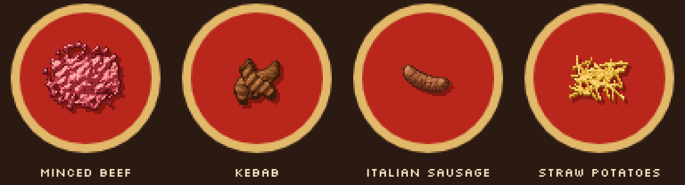

Small update today, almost all of it from player feedback: some toppings were just too small to read on the pizza.

Redrawn toppings
- Minced beef is now a packed, knobbly patch of raw red mince, one and a half times bigger. The chopped version is red too, so it no longer disappears into the tomato sauce.
- Kebab comes in big meat shavings instead of small bits.
- Italian sausage finally looks like a sausage: a curved link, tied at both ends, with fennel specks.
- Straw potatoes are a bigger, fuller tangle.
The lobster can move
The lobster is a little smaller and no longer snaps to the exact centre of the pizza. You can now nudge it around the middle, so it can share the pizza with other toppings.
Kitchen
- Pepperoni moved up to the classics at the top of the Meat tab.
- On wide screens and in full screen, the topping cards are now three a row and shorter, so you see far more of the pantry without scrolling.
Day screen
The "RIVAL $5.00" line is gone from the day's LCD. It confused more people than it helped. The rival's prices still shape the day as before.
Your save carries over as always. Thanks for playing, and keep the feedback coming: tell us which topping you'd like redrawn next!